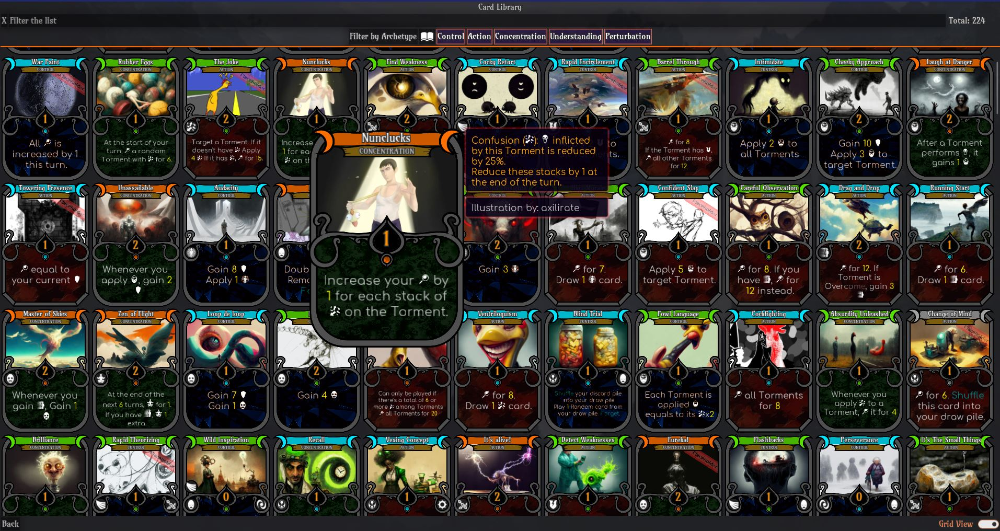
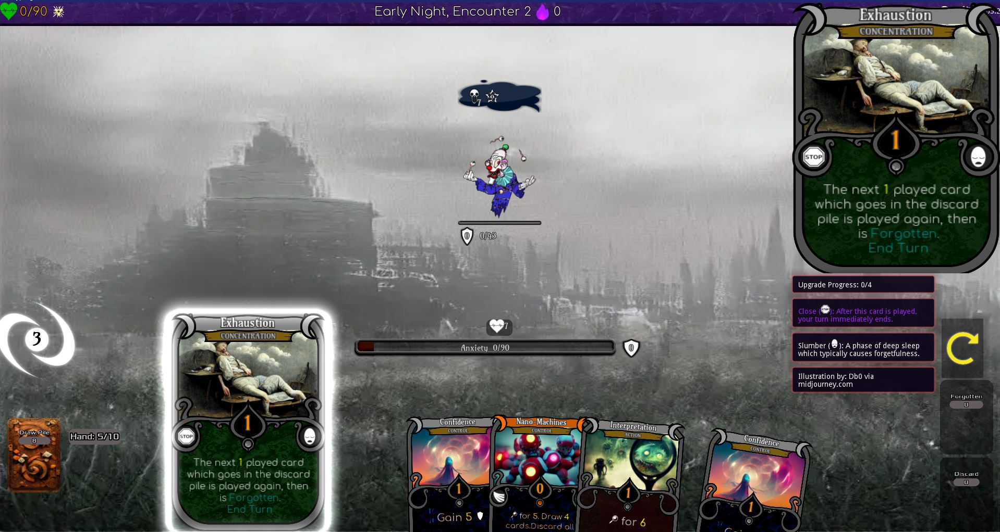

Interpretation
Torment를 이해하는 진행량입니다. Comprehension 한계에 도달하면 Torment를 극복합니다.

THERAPY THROUGH NIGHTMARES · v0.67.1
적을 죽이는 대신 악몽을 해석하고, 체력 대신 불안이 한계에 닿기 전에 돌파구를 찾는 Godot 기반 덱빌더입니다.
01 / THE GAME
Hypnagonia는 Slay the Spire 계열의 덱 구성·드로우·비용·상태 효과를 사용하지만, 전투의 언어를 심리적 은유로 다시 씁니다. 플레이어는 Dreamer이며, 적은 현실의 불안과 문제에서 나온 Torment입니다. 공격 수치는 Interpretation, 적의 체력은 Comprehension, 받는 피해는 Stress, 생존 한계는 Anxiety가 됩니다.
핵심은 테마를 카드 위에 덧씌운 것이 아니라, 승리와 패배를 설명하는 기본 명사를 교체한 데 있습니다.
PLAYER VOCABULARY
Torment를 이해하는 진행량입니다. Comprehension 한계에 도달하면 Torment를 극복합니다.
Torment가 요구하는 해석의 총량입니다. 일반 덱빌더의 적 체력에 해당합니다.
Torment의 intent가 가하는 압력입니다. Confidence를 먼저 깎고 남은 값이 Anxiety를 올립니다.
Dreamer의 실패 한계입니다. 최대치에 도달하면 악몽에서 깨어나 run이 끝납니다.
대부분의 카드를 사용할 때 지불하는 턴 자원입니다.
각각 Dreamer와 Torment의 방어층입니다. Stress와 Interpretation이 본체에 닿기 전에 흡수합니다.
02 / RUN LOOP
Archetype과 시작 카드, 성격 요소를 선택합니다.
현재 Pathos와 확률에 따라 1~3개의 다음 encounter가 제시됩니다.
Torment 전투, 위험·비전투 사건, 상점, 휴식이 run을 변화시킵니다.
새 카드, Memory, Artifact와 영구적인 카드 향상·흉터가 누적됩니다.
Early Night, Deep Sleep, Pre-Dawn을 거쳐 Act 보스와 마주합니다.
SingleRun이 Act, 남은 encounter, 보스와 journal 선택을 관리하고,
GameSave가 RNG seed·player·encounter·difficulty를 함께 저장합니다.
03 / SOURCE ARCHITECTURE
src/core는 Card Game Framework의 카드·pile·drag·focus·범용 scripting을,
src/dreamscape는 Hypnagonia의 전투·런·용어·콘텐츠를 소유합니다.
설정 파일의 경로 상수가 이 확장 경계를 명시합니다.
cfcglobalsSoundManagerEventBusscripting_bus
04 / CARD ENGINE
카드 한 장은 표시용 definition과 실행용 script로 나뉩니다. Definition은 이름·Type·Cost·Abilities·수치·업그레이드를 담고, script는 어떤 task를 어떤 subject에게 실행할지 기술합니다.
범용 ScriptingEngine은 task를 queue로 만들고 비용 dry-run을 먼저 수행합니다.
실제 상태 변경은 modify_damage, assign_defence,
apply_effect 같은 executor 경계가 담당합니다.
"Interpretation": {
"Type": "Action",
"Abilities": "{damage} for {damage_amount}",
"Cost": 1,
"_amounts": { "damage_amount": 6 }
}{
"name": "modify_damage",
"subject": "target",
"needs_subject": true,
"amount": {
"lookup_property": "_amounts",
"value_key": "damage_amount"
}
}근거: SetDefinition_Core.gd · SetScripts_Core.gd · ScriptingEngine.gd
05 / TURN & PREDICTION
시작 signal을 보내고 카드를 사용합니다. 턴 종료 시 손을 정리하고 다음 손을 준비합니다.
Board가 살아 있는 Torment를 순서대로 activate하며 각 완료 signal을 기다립니다.
상태 snapshot과 cost dry-run으로 예상 Stress·방어 변화를 계산해 intent icon에 표시합니다.
06 / PLAY SURFACES



07 / CONTENT SYSTEM
적, elite, boss, 비전투 사건 풀을 분리합니다.
표시 정보와 실행 task를 독립적으로 확장합니다.
전투 효과와 장기적인 build 변화를 제공합니다.
비용, 보상, 선택, 상태 계산 규칙을 변형합니다.
선택과 대가를 통해 Pathos와 덱을 변화시킵니다.
UI와 전투 객체를 Godot scene tree로 조립합니다.
09 / TRUTH BOUNDARY
10 / READING ORDER
main scene과 전역 서비스의 시작점을 확인합니다.
core와 dreamscape 경로, 카드 크기와 scripting 확장점을 읽습니다.
Act와 journal choice가 어떻게 만들어지는지 봅니다.
Dreamer와 Torment, intent 예측과 turn 전환을 확인합니다.
게임 용어가 카드 속성과 화면에 연결되는 방식을 읽습니다.
같은 카드의 definition과 script를 나란히 비교합니다.
task queue, cost dry-run, subject resolution을 추적합니다.
Interpretation, Confidence와 상태 효과가 실제 수치를 바꾸는 지점입니다.
player, encounter, difficulty, RNG state의 저장 범위를 확인합니다.
생성 이야기와 게임 규칙이 섞이지 않는 경계를 봅니다.
11 / RUN & LICENSE
upstream workflow는 Godot 3.6으로 test와 HTML5·Windows·Linux·macOS export를 수행합니다. 가장 간단한 체험 경로는 itch.io의 공식 브라우저/다운로드 배포입니다.
코드의 기본 라이선스는 AGPL-3.0이며 Steamworks 연동에 관한 addendum이 있습니다. 이미지와 shader는 파일별 라이선스를 따르며 README는 대다수가 CC-BY-SA 4.0이라고 설명합니다. 원작자와 전체 크레딧은 게임 및 upstream 저장소를 기준으로 확인해야 합니다.